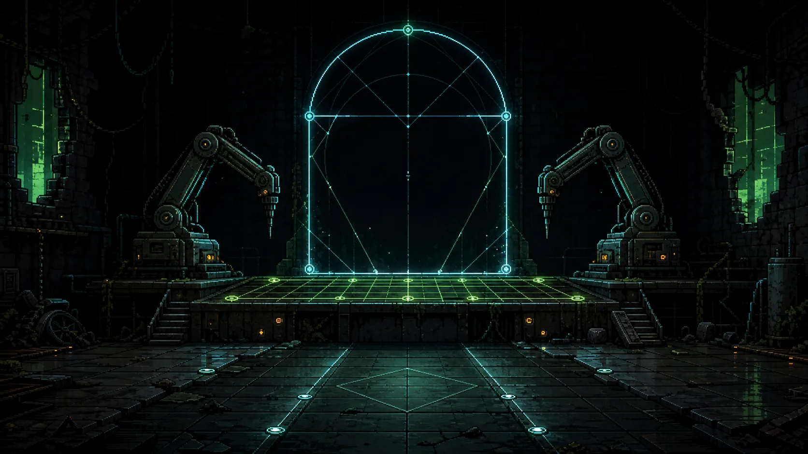

CH.02 · VECTOR FOUNDRY
COURSE CARD
COURSE_CARD
0%
OUT-OF-SEQUENCE PREVIEW · PLAYABLE · NO FORMAL SAVE, RANKED RECORD OR COURSE MAP EVIDENCE
CURRENT KNOWLEDGE
CURRENT GOAL
G · GUIDE
R · REFERENCE
H · HINT
COURSE MAP
VECTOR FOUNDRY